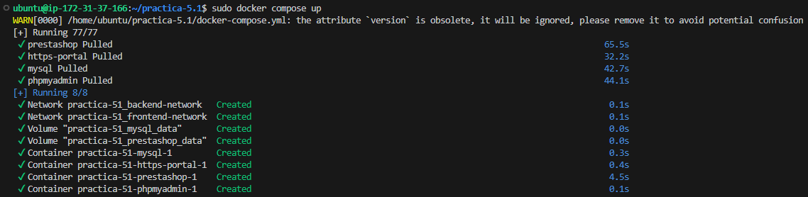
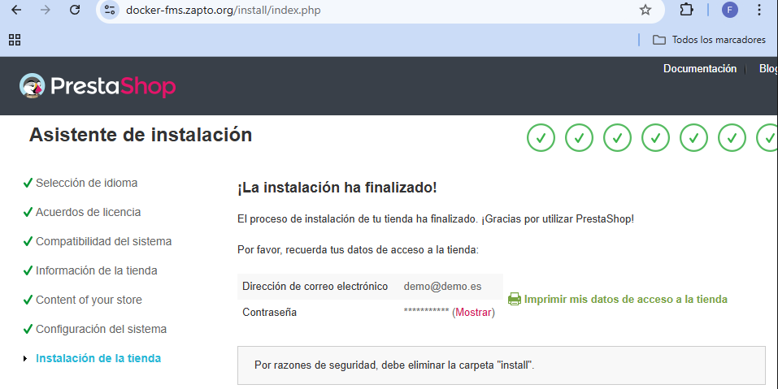
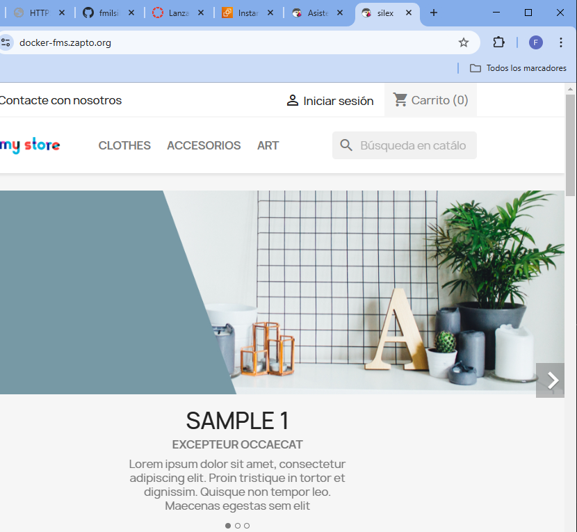

practica-5.1
En esta práctica vamos a utilizar Docker y Docker Compose para la instalación de una PrestaShop.
Para ello necesitaremos un archivo docker-compose.yml, el instalador de Docker (en caso de no tenerlo instalado) y un archivo de configuraciones .env
A continuación dejo los contenidos de los archivos utilizados:
instalar_docker.sh OPCIONAL
#Script de instalación de Docker y Docker Compose
#Referencia: https://docs.docker.com/engine/install/ubuntu/
set -x
#Actualizamos los repositorios
apt update
#Instalamos los paquetes necesarios para que apt pueda usar repositorios sobre HTTPS
apt install -y \
ca-certificates \
curl \
gnupg \
lsb-release
#Añadimos la clave GPG oficial de Docker
mkdir -p /etc/apt/keyrings
curl -fsSL https://download.docker.com/linux/ubuntu/gpg | gpg --dearmor -o /etc/apt/keyrings/docker.gpg
#Añadimos el repositorio oficial de Docker a nuestro sistema
echo \
"deb [arch=$(dpkg --print-architecture) signed-by=/etc/apt/keyrings/docker.gpg] https://download.docker.com/linux/ubuntu \
$(lsb_release -cs) stable" | sudo tee /etc/apt/sources.list.d/docker.list > /dev/null
#Actualizamos la lista de paquetes
apt update
#Instalamos la última versión de Docker y Docker Compose
apt install -y docker-ce docker-ce-cli containerd.io docker-compose-plugin
#Añadimos el usuario actual al grupo docker
usermod -aG docker $USER
#Habilitamos el servicio de Docker para que se inicie automáticamente al arrancar el sistema
systemctl enable docker
#Iniciamos el servicio de Docker
systemctl start docker
docker-compose.yml
version: '3.4'
services:
mysql:
image: mysql:9.1
ports:
- 3306:3306
environment:
- MYSQL_ROOT_PASSWORD=${MYSQL_ROOT_PASSWORD}
- MYSQL_DATABASE=${MYSQL_DATABASE}
- MYSQL_USER=${MYSQL_USER}
- MYSQL_PASSWORD=${MYSQL_PASSWORD}
volumes:
- mysql_data:/var/lib/mysql
networks:
- backend-network
restart: always
phpmyadmin:
image: phpmyadmin:5.2.1
ports:
- 8080:80
environment:
- PMA_ARBITRARY=1
networks:
- backend-network
- frontend-network
restart: always
depends_on:
- mysql
prestashop:
image: prestashop/prestashop:8
environment:
- DB_SERVER=mysql
volumes:
- prestashop_data:/var/www/html
networks:
- backend-network
- frontend-network
restart: always
depends_on:
- mysql
https-portal:
image: steveltn/https-portal:1
ports:
- 80:80
- 443:443
restart: always
environment:
DOMAINS: "${DOMAIN} -> http://prestashop:80"
STAGE: 'production' # Don't use production until staging works
# FORCE_RENEW: 'true'
networks:
- frontend-network
volumes:
mysql_data:
prestashop_data:
networks:
backend-network:
frontend-network:
archivo .env
MYSQL_ROOT_PASSWORD=fran
MYSQL_DATABASE=prestashop
MYSQL_USER=fran
MYSQL_PASSWORD=a
DOMAIN=docker-fms.zapto.org
Ahora dejo unas capturas para verificar su funcionamiento:
Captura del resultado del docker-compose.yml:

Parte 1: Comprobación de la página:

Parte 2: Comprobación de la página:
